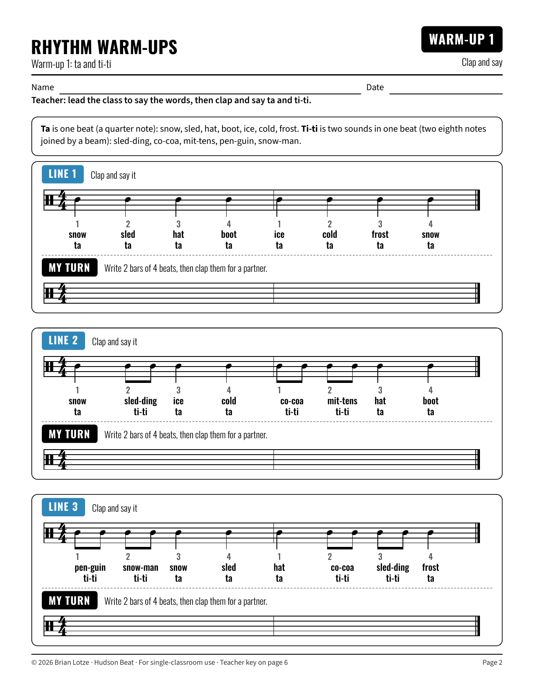
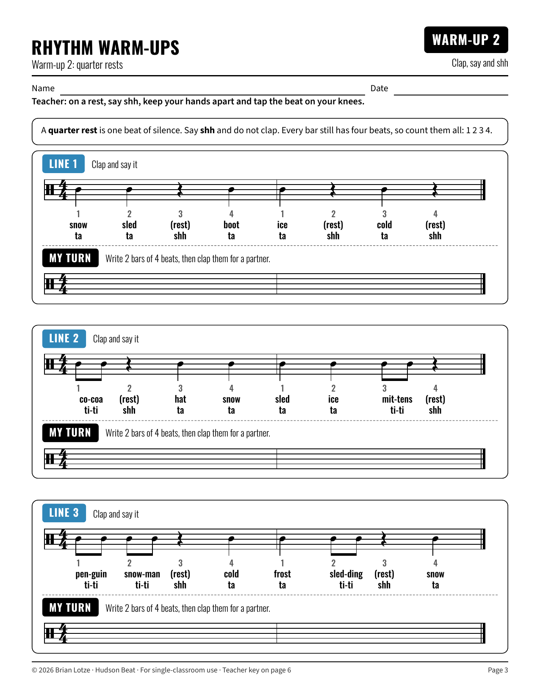
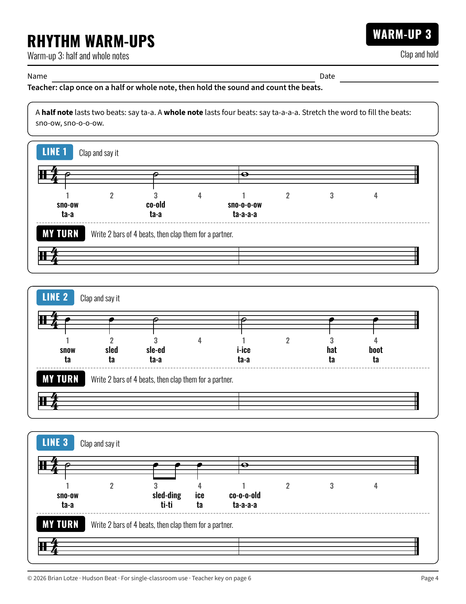

Hudson Beat
What is inside
Four warm-ups for grades 2–5

Warm-up 1: ta and ti-ti
Quarter notes and paired eighths, with winter words

Warm-up 2: quarter rests
A silent beat: say shh

Warm-up 3: half and whole notes
Hold the sound for 2 and 4 beats
Clap
Say
Hold
PREVIEW
Free
·
Teacher led
·
4/4 rhythms